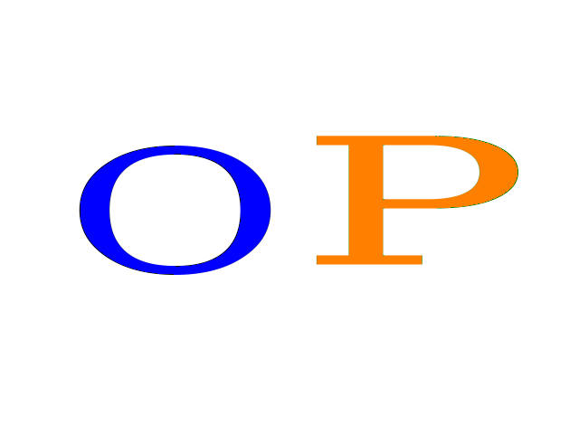

Curriculum Vitae
Nombre: Oven
Apellido: Pereyra
Fecha de nacimiento: 30/10/97
Lugar de nacimiento: Buenos Aires
Educación
Experiencia
Información Personal

Si bien es verdad que soy un profesional joven y con menos experiencia que otros candidatos, mi capacidad de aprendizaje y decisión me convierten en el candidato ideal para aquellas empresas que deseen crear un equipo joven, innovador y exigente.
mis habilidades son:
- Capacidad de aprendizaje
- Facilidad para trabajar en equipo
- Actitud positiva frente al trabajo
- Vocación por crecer y capacitarme
mis idiomas son: